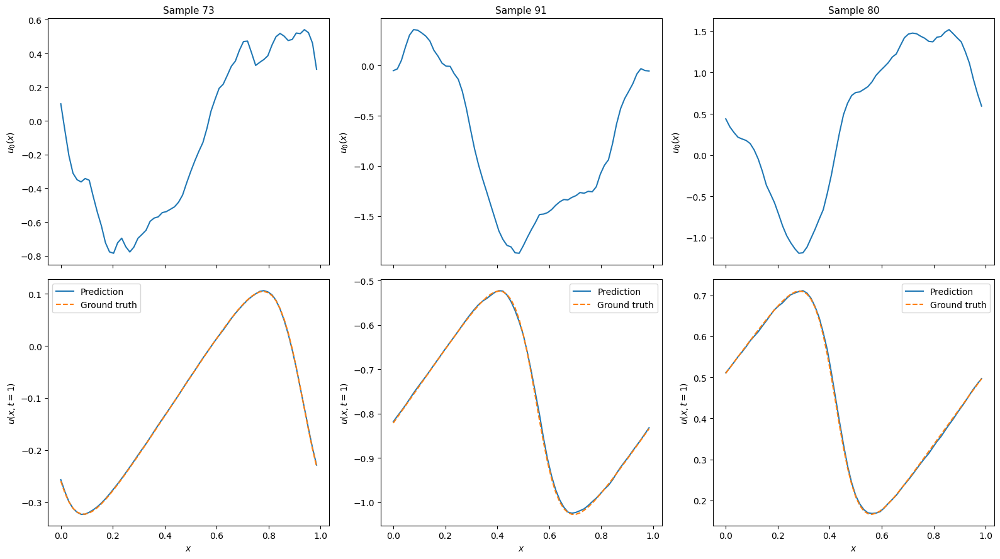

Training an FNO on Burgers' equation in 1D¶
This example demonstrates how a Fourier neural operator can be trained to predict solutions of Burgers' equation in 1D.
Users that want to just run a training script without reading this tutorial
can look at examples/burgers1d/train.py on
GitHub.
Note: This tutorial requires users to have datasets, optax, matplotlib
installed.
Problem statement¶
Burgers' equation in 1D on a periodic domain \(x \in [0, 1)\) reads
where \(\nu > 0\) is the kinematic viscosity. The first term is a non-linear advective term and the second is a diffusive term.
The learning task is to approximate the solution operator
mapping an initial condition \(u_0\) to the solution at time \(t_{\text{end}}\).
import math
import json
from functools import partial
import norax as nrx
import datasets
import jax
import jax.numpy as jnp
import numpy as np
import optax
import equinox as eqx
Data loading¶
Load the data from Hugging Face:
ds = datasets.load_dataset("TortillaChip/burgers1d-periodic", split="train")
To generate the data yourself, see the Generating Training Data example.
Data preprocessing¶
def preprocess(ds: datasets.Dataset, stride: int = 1):
"""Build ``input`` and ``output`` columns.
The resulting input column stacks the spatial grid and initial condition
along the last axis. The resulting output column is reshaped to have a
size-1 dimension as its last axis.
Optionally downsample the spatial grid with stride.
"""
out_features = datasets.Features(
{
"input": datasets.Array2D(shape=(target_res, 2), dtype="float32"),
"output": datasets.Array2D(shape=(target_res, 1), dtype="float32"),
}
)
def _build(batch):
x = np.array(batch["x"])[:, ::stride]
u0 = np.array(batch["u0"])[:, ::stride]
u_T = np.array(batch["u_end"])[:, ::stride]
return {"input": np.stack([x, u0], axis=-1), "output": u_T[:, :, None]}
return ds.map(
_build,
batched=True,
remove_columns=ds.column_names,
features=out_features,
).with_format("jax")
orig_res = 8192 # original resolution
target_res = 256 # target resolution
stride = orig_res // target_res
nu = 0.2 # viscosity
t_end = 1.0 # end time
ds = preprocess(ds, stride)
Split the data into train and test sets:
splits = ds.train_test_split(test_size=0.2, shuffle=False)
train_ds = splits["train"]
test_ds = splits["test"]
Model¶
key = jax.random.key(0)
key, subkey = jax.random.split(key)
model = nrx.FNO(
key=subkey,
channels_in=2,
channels_out=1,
n_modes=(16,),
width=64,
depth=4,
)
print(model)
nrx.FNO(
lift=MLP(
activation=<function gelu>,
depth=2,
width=128,
hidden_layers=(Linear(weight=f32[128,2], bias=f32[128]),),
output_layer=Linear(weight=f32[64,128], bias=f32[64])
),
project=MLP(
activation=<function gelu>,
depth=2,
width=128,
hidden_layers=(Linear(weight=f32[128,64], bias=f32[128]),),
output_layer=Linear(weight=f32[1,128], bias=f32[1])
),
fourier_layers=(
Fourier(
spectral=SpectralConv(
channels_in=64,
channels_out=64,
n_modes=(16,),
n_dims=1,
weights_re=f32[64,64,16],
weights_im=f32[64,64,16]
),
linear=Linear(weight=f32[64,64], bias=f32[64]),
activation=<function gelu>
),
...
)
)
Verify that a forward pass works for a couple of samples:
batch = next(iter(train_ds.iter(batch_size=2)))
jax.vmap(model)(batch["input"]).shape
(2, 64, 1)
Evaluation¶
def relative_l2(prediction: jax.Array, target: jax.Array) -> jax.Array:
return jnp.linalg.norm(prediction - target) / jnp.linalg.norm(target)
@partial(jax.vmap, in_axes=(None, 0, 0))
def loss_fn(model: nrx.FNO, x: jax.Array, y: jax.Array) -> jax.Array:
return relative_l2(model(x), y)
@jax.jit
def eval_step(model: nrx.FNO, x: jax.Array, y: jax.Array) -> jax.Array:
return jnp.sum(loss_fn(model, x, y))
def evaluate(model: nrx.FNO, dataset: datasets.Dataset, batch_size: int) -> float:
total_loss = jnp.zeros(())
n_samples = 0
for batch in dataset.iter(batch_size=batch_size):
x, y = batch["input"], batch["output"]
n_samples += x.shape[0]
total_loss += eval_step(model, x, y)
return float(total_loss / n_samples)
Training¶
Create an Adam optimiser with a learning rate that halves every 100 epochs:
learning_rate = 1e-3
batch_size = 32
steps_per_epoch = math.ceil(len(train_ds) / batch_size)
schedule = optax.schedules.exponential_decay(
learning_rate,
transition_steps=steps_per_epoch * 100,
decay_rate=0.5,
staircase=True,
)
optimiser = optax.adam(schedule)
opt_state = optimiser.init(eqx.filter(model, eqx.is_array))
Define a single training step (batch update):
@eqx.filter_jit
def train_step(
model: nrx.FNO,
opt_state: optax.OptState,
optimiser: optax.GradientTransformation,
x: jax.Array,
y: jax.Array,
):
loss, grads = eqx.filter_value_and_grad(
lambda m: jnp.mean(loss_fn(m, x, y))
)(model)
updates, opt_state = optimiser.update(
grads, opt_state, eqx.filter(model, eqx.is_array)
)
model = eqx.apply_updates(model, updates)
return model, opt_state, loss * x.shape[0]
Define a training epoch. The dataset is shuffled with a fresh seed each
epoch by calling .shuffle() before iterating:
def run_epoch(
model: nrx.FNO,
opt_state: optax.OptState,
optimiser: optax.GradientTransformation,
ds: datasets.Dataset,
batch_size: int,
):
total_loss = jnp.zeros(())
n_samples = 0
for batch in ds.iter(batch_size=batch_size):
x, y = batch["input"], batch["output"]
n_samples += x.shape[0]
model, opt_state, batch_loss = train_step(
model, opt_state, optimiser, x, y
)
total_loss += batch_loss
return model, opt_state, float(total_loss / n_samples)
Run the training loop:
n_epochs = 500
for epoch in range(1, n_epochs + 1):
shuffled = train_ds.shuffle(seed=epoch)
model, opt_state, train_loss = run_epoch(
model, opt_state, optimiser, shuffled, batch_size
)
if epoch % 10 == 0 or epoch == n_epochs:
test_loss = evaluate(model, test_ds, batch_size)
print(
f"Epoch {epoch:4d}/{n_epochs} "
f"train={train_loss:.4e} test={test_loss:.4e}"
)
Epoch 10/500 train=1.0623e-01 test=9.8970e-02
Epoch 20/500 train=6.6438e-02 test=6.6549e-02
Epoch 30/500 train=3.9810e-02 test=3.8570e-02
...
Predictions¶
import matplotlib.pyplot as plt
num_examples = 3
key = jax.random.key(0)
key, subkey = jax.random.split(key)
random_inds = jax.random.choice(
subkey, len(test_ds), (num_examples,), replace=False
).tolist()
examples = test_ds.select(random_inds)[:]
example_inputs = examples["input"]
example_outputs = examples["output"]
predictions = jax.vmap(model)(example_inputs)
fig, axes = plt.subplots(
2, num_examples, figsize=(16, 9), layout="tight", sharex=True
)
for i in range(num_examples):
x = example_inputs[i, :, 0]
u0 = example_inputs[i, :, 1]
v_true = example_outputs[i, ...]
v_pred = predictions[i, ...]
axes[0, i].plot(x, u0)
axes[0, i].set_ylabel("$u_0(x)$", fontsize=10)
axes[0, i].set_title(f"Sample {random_inds[i]}", fontsize=11)
axes[1, i].plot(x, v_pred, "-", label="Prediction")
axes[1, i].plot(x, v_true, "--", label="Ground truth")
axes[1, i].set_xlabel("$x$", fontsize=10)
axes[1, i].set_ylabel("$u(x, t=1)$", fontsize=10)
axes[1, i].legend(fontsize=10)
plt.show()

Saving and loading models¶
def save_model(path: str, model: nrx.FNO, hyperparams: dict) -> None:
"""Save model weights and hyperparameters to a binary file.
The file format follows the Equinox recommended pattern:
a JSON-encoded hyperparameter line followed by the serialised leaves.
"""
with open(path, "wb") as f:
f.write((json.dumps(hyperparams) + "\n").encode())
eqx.tree_serialise_leaves(f, model)
def load_model(path: str):
"""Load a model previously saved with `save_model`."""
with open(path, "rb") as f:
hyperparams = json.loads(f.readline().decode())
hyperparams["n_modes"] = tuple(hyperparams["n_modes"])
skeleton = nrx.FNO(key=jax.random.key(0), **hyperparams)
model = eqx.tree_deserialise_leaves(f, skeleton)
return model, hyperparams
hyperparams = {
"channels_in": 2,
"channels_out": 1,
"n_modes": list((16,)),
"width": 64,
"depth": 4,
}
save_model("mymodel.eqx", model, hyperparams)
print("Model saved.")
# Verify that saving and loading works
model_loaded, hyperparams_loaded = load_model("mymodel.eqx")
print("Model loaded. hyperparams:", hyperparams_loaded)
Model saved.
Model loaded. hyperparams: {'channels_in': 2, 'channels_out': 1, 'n_modes': (16,), 'width': 64, 'depth': 4}